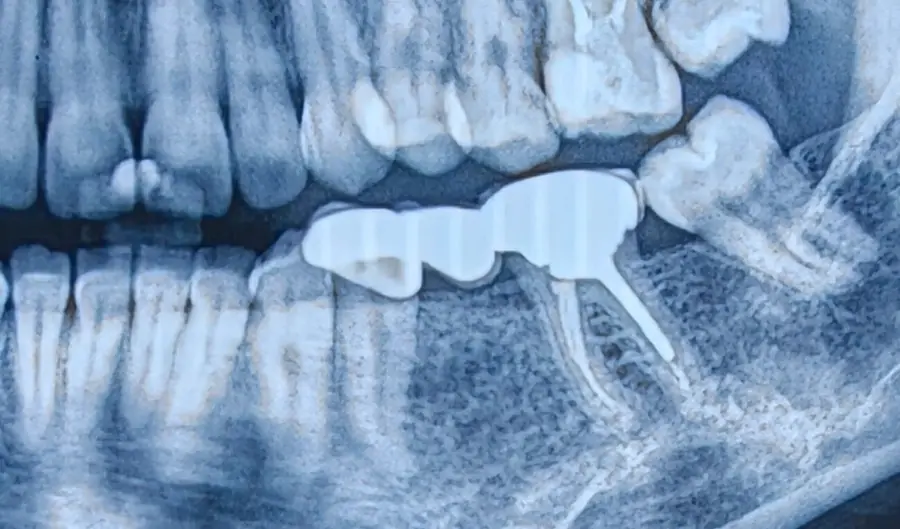

نسخه استخراجشده؛ ترجمه یا تأیید علمی انجام نشده است. وضعیت: captured
بیمار با نارضایتی شدید از بریجی که تازه تحویل گرفته آمده است: «اصلاً راضی نیستم و خیلی توی دهانم حس میشود.» بریج سهواحدی PFM روی دندانهای ۴ تا ۶ پایین سمت چپ است. تعویضش میکنی؟

در نگاه اول بریج از نظر تکنیکی و ظاهری بسیار ضعیف است:
اما بیمار از ظاهر، زیبایی، جویدن یا گیر غذایی شکایتی ندارد. تمام تمرکزش روی یک چیز است: حس حجیم بودن سمت لینگوال؛ حس میکند پروتز بیش از حد داخل دهانش جا گرفته است.
کار این ویزیت این است که قبل از دست بردن به توربین ببینی آیا این شکایت سابجکتیو با یک درمان مجدد واقعاً برطرف میشود یا نه.
شروع فوری تعویض پروتز رد شد. به بیمار گفته شد که بریج زیبا نیست، ولی این چیزی نیست که از آن ناراضی است؛ فرم سمت زبان نرمال است و حتی زیباترین و ظریفترین بریج هم آن را کمحجمتر نمیکند؛ هزینه و رفتوآمد میکند و در نهایت همان حس سنگینی را خواهد داشت.
درمان متوقف نشد، بلکه مشروط شد: اول عکس پریاپیکال. اگر پایهها مشکل بیولوژیک یا تکنیکی جدی (مثل عدم انطباق لبهها یا پوسیدگی) داشته باشند، تصمیم عوض میشود؛ در غیر این صورت تعویض پروتز کمکی به شکایت ذهنی او نمیکند.
پیش از هر اقدامی بسنج که آیا واقعاً توان برطرف کردن شکایت اصلی (Chief Complaint) بیمار را داری. اگر مشکلی که بیمار مطرح میکند با استانداردهای آناتومیک قابل تغییر نیست، عوض کردن یک پروتز نازیبا فقط تو را شریک یک نارضایتی حلنشده میکند.